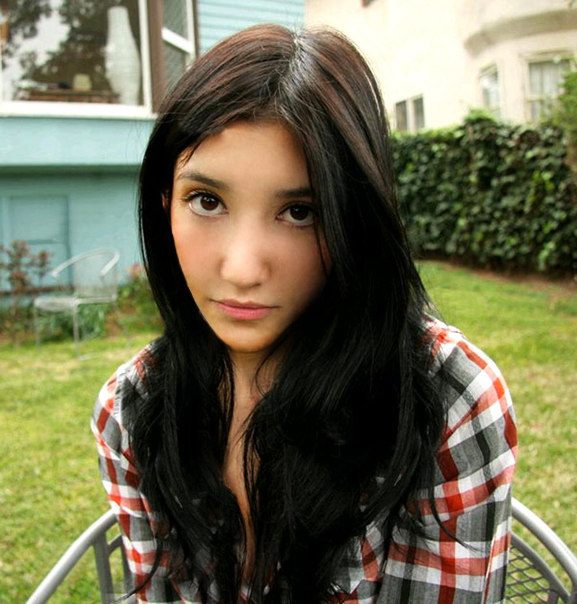
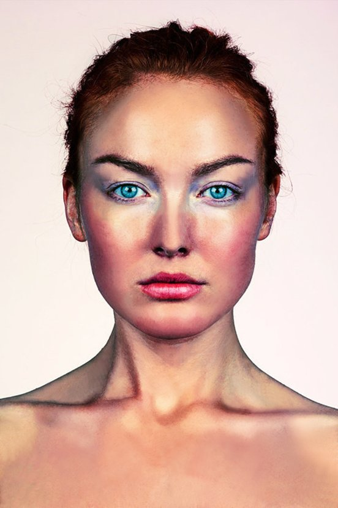
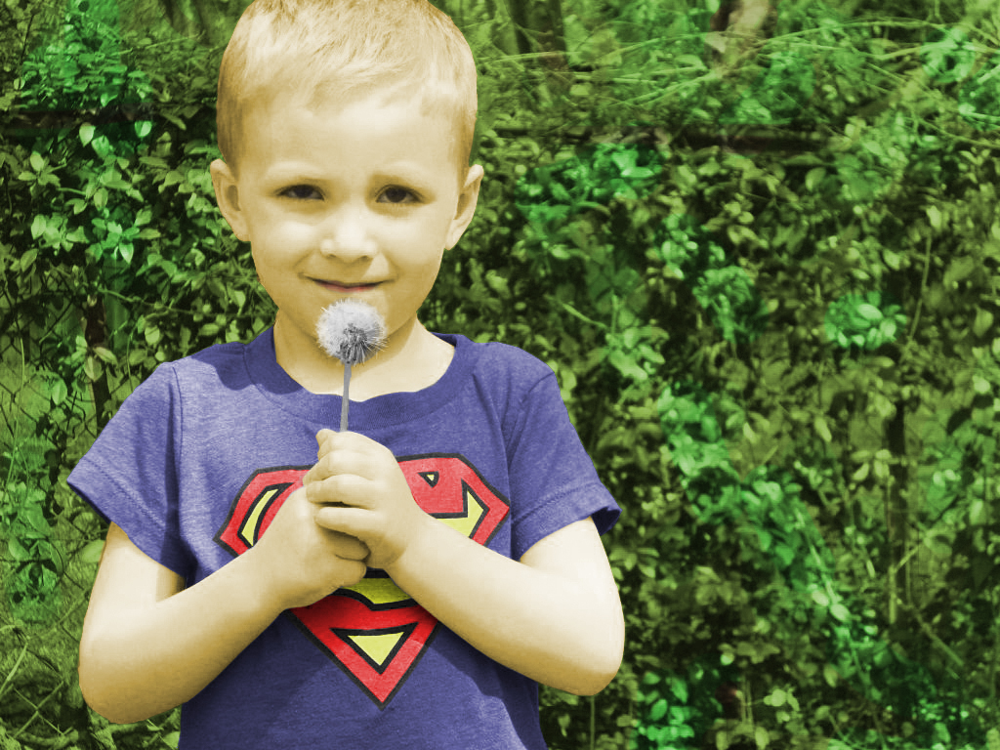
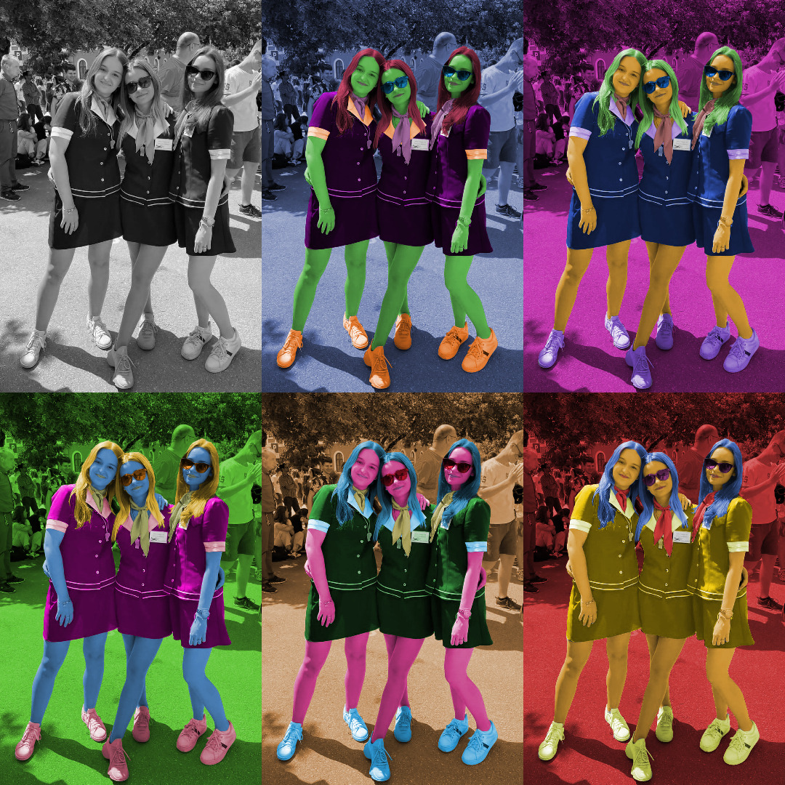
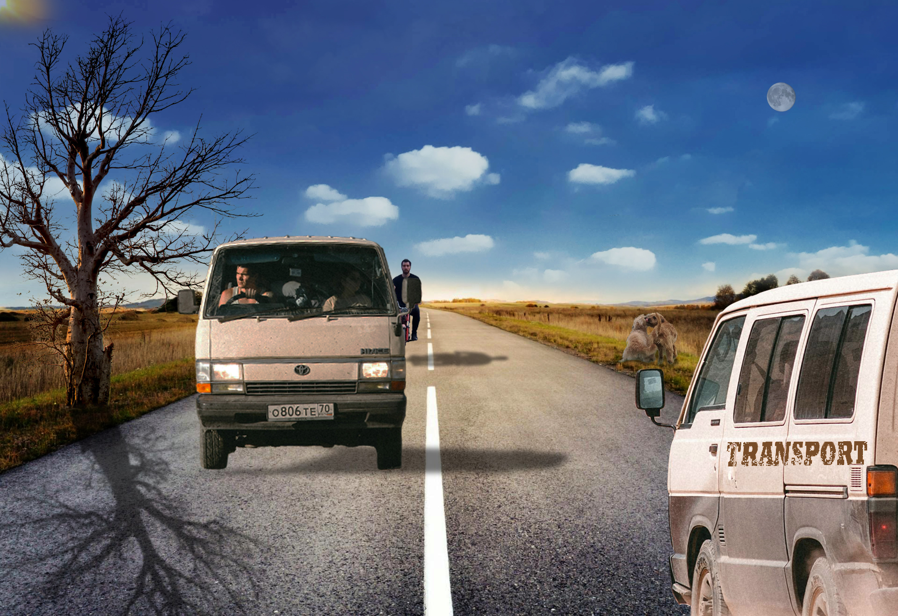
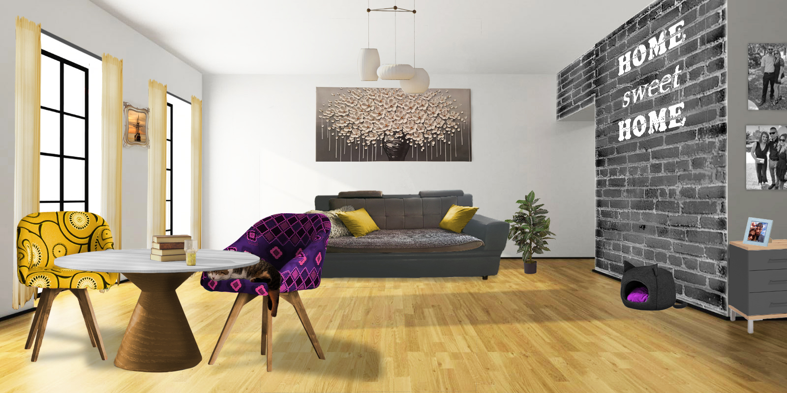

Primijenjivanje tehnike retuširanja uključujući zamućivanje, kloniranje, kopiranje selekcija u layere, lokalno posvjetljivanje/tamnjenje i globalnu korekciju boja kako bi se postigao realističan efekt.
 Koloriranje fotografije koristeći se alatima Magnetic Lasso Tool i Quick Mask Mode te kreiranje Adjustment layera s Hue/Saturation za dodavanje boja uz pomoć layer maski.
 Kobiniranje više fotografija pomoću tehnika jednostavne selekcije(Polygonal Lasso), selekcije pomoću kanala(Burn and Dodge tool), selekcije s jasno definiranim rubovima (Magnetic Lasso, Quick mask), Vanishing point i Blending mode(Blend if) te korigiranje boje za usklađenje sa originalnom scenom.
Kreiranje kompozicije u Adobe Photoshopu / GIMP koristeći tehnike retuširanja, fotomontaže i koloriranja, kombinirajući zadane fotografije. Primijenjivanje alata za selekciju, transformacije, maske, sjene i koloriranje.
